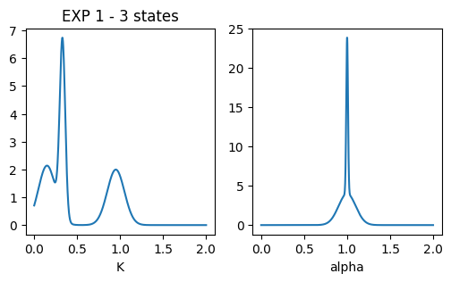
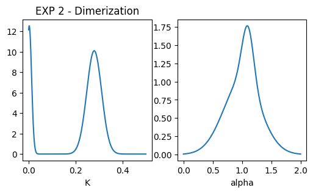
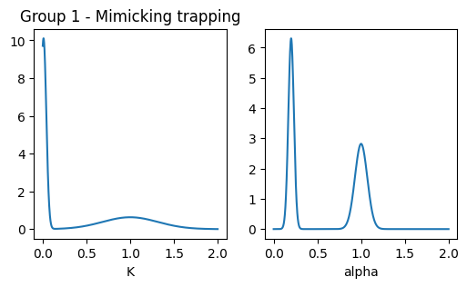
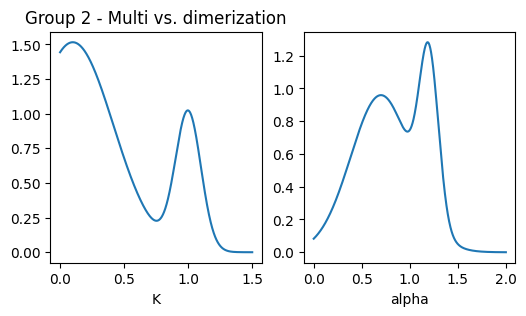
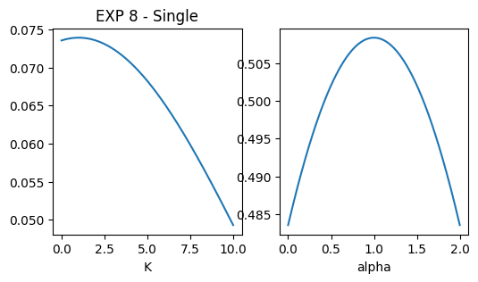
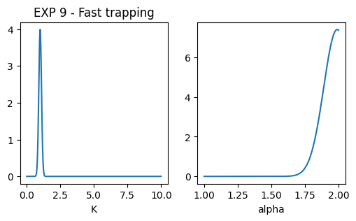

import numpy as np
import matplotlib.pyplot as plt
from andi_datasets.datasets_challenge import _defaults_andi2, challenge_phenom_dataset, _get_dic_andi2
from andi_datasets.utils_challenge import multimode_dist
from andi_datasets.models_phenom import models_phenom
from andi_datasets.utils_challenge import file_nonOverlap_reOrg
from pathlib import Path
# For visualization
import matplotlib.pyplot as pltBenchmark Dataset of the 2nd AnDi Challenge
In this notebook, we showcase how to generate the benchmark dataset of the 2nd AnDi Challenge. This dataset has been curated from the one used during the “Challenge phase” of the 2nd AnDi Challenge. The results of the challenge participants on these datasets are discussed in the associated paper. In this tutorial, we will demonstrate how to create the benchmark dataset from scratch. Throughout this notebook, we assume knowledge of the basics of the challenge. If you are new, we recommend checking the previous two tutorials, which you can find in this notebook and this notebook.
Important note: This notebook complements the explanations provided in the section “Generating the ANDI 2 Challenge Dataset” of the second tutorial (link again). Here, we will cover only the dataset generation. To learn about file organization, expected files, and contents, please refer to that previous tutorial!
Loading the dataset
In case you don’t want to generate the dataset yourself, you can find it Zenodo.
Structure of the dataset
The dataset consists of 9 experiments, designed to benchmark methods across various scenarios, with a strong focus on single-particle tracking experiments. For more on the biological motivation of this dataset, please see the paper. The first two experiments were designed to mimic typical biological scenarios, specifically:
- EXP 1: Multistate model with 3 diffusive states inspired by this T. Sungkaworn et al., Nature 550, 543–547 (2017).
- EXP 2: Dimerization model inspired by this S. Low-Nam et al., Nat Struct Mol Biol 18, 1244–1249 (2011.
Next, we consider a group of experiments with approximately the same diffusive parameters but different underlying diffusion models. This serves as a benchmark for methods’ ability to distinguish between different physical processes. This group includes three experiments, all of which share similar properties for the diffusive state, with variations in other states to mimic trapping:
- EXP 3: Trapping with a normal diffusive state.
- EXP 4: Confinement with a small confinement radius and a slow confined diffusive state.
- EXP 5: Dimerization with a slow dimerized state.
The second group evaluates methods’ ability to leverage the underlying physics of the diffusion model, especially in comparing two experiments with identical diffusive parameters but different underlying models:
- EXP 6: Dimerization model.
- EXP 7: Multistate model.
We also include two datasets aimed at testing specific strengths of characterization methods:
- EXP 8: Single-state model with very broad \(\alpha\) and \(K\) distributions. This allows for investigating false positives in changepoint detection and benchmarking methods in datasets without diffusive changes.
- EXP 9: Trapping model with very short trapping times and superdiffusion in the free state, assessing methods under extreme conditions.
Here is a summary of each experiment’s parameters:
| EXP | Model | # states | K (pixel2/frameα) | α | Diff. class | Model-specific parameters | |||
|---|---|---|---|---|---|---|---|---|---|
| μ | σ2 | μ | σ2 | ||||||
| 1 | MSM | 3 | 1 | 0.15 | 0.01 | 1 | 0.0001 | 2 | M = [[0.946, 0.024, 0.03], [0.016, 0.92, 0.064], [0.037, 0.14, 0.823]] |
| 2 | 0.33 | 0.001 | 1 | 0.01 | 2 | ||||
| 3 | 0.95 | 0.01 | 1 | 0.01 | 2 | ||||
| 2 | DIM | 2 | 1 | 0.28 | 0.001 | 1 | 0.1 | 2 | r = 0.5, N = 750, Pb = 1, Pu = 0.1 |
| 2 | 0.0035 | 0.0001 | 1.1 | 0.01 | 2 | ||||
| 3 | QTM | 2 | 1 | 1 | 0.1 | 1 | 0.005 | 2 | rt = 0.4, Nt = 500, Pb = 0.7, Pu = 1/60 |
| 2 | - | - | - | - | 0 | ||||
| 4 | TCM | 2 | 1 | 1 | 0.1 | 1 | 0.005 | 2 | rc = 2, Nc = 150, T = 0.1 |
| 2 | 0.01 | 0.001 | 0.2 | 0.001 | 1 | ||||
| 5 | DIM | 2 | 1 | 1 | 0.1 | 1 | 0.005 | 2 | r = 0.35, N = 500, Pb = 1, Pu = 1/60 |
| 2 | 0.01 | 0.001 | 0.2 | 0.001 | 2 | ||||
| 6 | DIM | 2 | 1 | 0.1 | 0.1 | 0.7 | 0.1 | 2 | r = 1, N = 100, Pb = 1, Pu = 0.05 |
| 2 | 1 | 0.01 | 1.2 | 0.01 | 2 | ||||
| 7 | MSM | 2 | 1 | 0.1 | 0.1 | 0.7 | 0.1 | 2 | M = [[0.9833, 0.0167], [0.05, 0.95]] |
| 2 | 1 | 0.01 | 1.2 | 0.01 | 2 | ||||
| 8 | SSM | 1 | 1 | 1 | 100 | 1 | 10 | 2 / 3 | - |
| 9 | QTM | 2 | 1 | 1 | 0.01 | 1.99 | 0.01 | 2 / 3 | rc = 1.5, Nt = 1000, Pb = 0.7, Pu = 1/5 |
| 2 | - | - | - | - | 0 | ||||
Generating the dataset
Here we showcase, step by step, how to generate the benchmark dataset. This will allow us to explore the experiments as we define them. Also, it may helpful in case you want to generate a dataset of similar structure with different diffusive models / parameters.
We start by importing the necessary libraries:
In case you want to have EXACTLY the same dataset as the one shared, you need to fix the seeds of both numpy and stochastic. The latter works in the background for the generation of the fractional Brownian motion trajectories.
Note: the generated data will only the same as the shared one if you run the cells from here on only once and in the designated order.
np.random.seed(12112024)
import stochastic
stochastic.random.seed(10)Experiment Parameters
We define now the parameters for each experiment. As done in previous tutorials, we will generate for each experiment a dictionary containing its specific parameters. As you will see, most of the parameters come from the default parameters, which can be found at _defaults_andi2(). We will then store all these dictionaries in a list dics that will be later passed to the function challenge_phenom_dataset from andi_datasets.datasets_challenge.
As we generate the different experiments we will plot the distribution of diffusive parameters to check that everything runs smoothly.
dics = []
num_exps = 9 # Number of experiments we will generateEXP 1
Ds_exp1 = np.array([[0.15, 0.01],
[0.33, 0.001],
[0.95, 0.01]])
alphas_exp1 = np.array([[1, 0.0001],
[1, 0.01],
[1, 0.01]])
# Transition probabilities
p12 = 0.024; p13 = 0.03;
p11 = 1-p12-p13
p21 = 0.016; p23 = 0.064
p22 = 1-p21-p23
p31 = 0.037; p32 = 0.140
p33 = 1-p31-p32
# Transition matrix
M_exp1 = np.array([[p11, p12, p13],
[p21, p22, p23],
[p31, p32, p33],
])
dic_multi_exp1 = _get_dic_andi2(2)
dic_multi_exp1['M'] = M_exp1
dic_multi_exp1['alphas'] = alphas_exp1
dic_multi_exp1['Ds'] = Ds_exp1
dics.append(dic_multi_exp1)
### plot pops parameters
fig, ax = plt.subplots(1,2, figsize = (6,3))
ax[0].set_title('EXP 1 - 3 states')
x = np.linspace(0.001,2,1000)
dist = multimode_dist(Ds_exp1.tolist(), [0.5,0.5,0.5], bound = [1e-12,1e6], x = x)
ax[0].plot(x, dist)
ax[0].set_xlabel('K'); #ax[0].set_xscale('log')
x = np.linspace(0,2,1000)
dist = multimode_dist(alphas_exp1.tolist(), [0.5,0.5,0.5], bound = [0,2], x = x)
ax[1].plot(x, dist)
ax[1].set_xlabel('alpha')Text(0.5, 0, 'alpha')
EXP 2
Ds_exp2 = np.array([[0.28, 0.001],
[0.0035, 0.0001]])
alphas_exp2 = np.array([[1, 0.1],
[1.1, 0.01]])
dic_dim_exp2 = _get_dic_andi2(4)
dic_dim_exp2['r'] = 0.5
dic_dim_exp2['Pb'] = 1
dic_dim_exp2['Pu'] = 0.1
dic_dim_exp2['N'] = _defaults_andi2().N*15
dic_dim_exp2['alphas'] = alphas_exp2
dic_dim_exp2['Ds'] = Ds_exp2
dics.append(dic_dim_exp2)
### plot pops parameters
fig, ax = plt.subplots(1,2, figsize = (6,3))
ax[0].set_title('EXP 2 - Dimerization')
x = np.linspace(0.001,0.5,1000)
dist = multimode_dist(Ds_exp2.tolist(), [0.8,0.2], bound = [1e-12,1e6], x = x)
ax[0].plot(x, dist)
ax[0].set_xlabel('K'); #ax[0].set_xscale('log')
x = np.linspace(0,2,1000)
dist = multimode_dist(alphas_exp2.tolist(), [0.8,0.2], bound = [0,2], x = x)
ax[1].plot(x, dist)
ax[1].set_xlabel('alpha')Text(0.5, 0, 'alpha')
Group 1: EXP 3, 4 and 5
Ds_g1 = np.array([[1, 0.1],
[0.01, 0.001]])
alphas_g1 = np.array([[1, 0.005],
[0.2, 0.001]])
res_time_trap = 60 # Expected residence time in trapped state
dic_trap_g1 = _get_dic_andi2(3)
dic_trap_g1['Pb'] = 0.7
dic_trap_g1['Pu'] = 1/res_time_trap
dic_trap_g1['Nt'] = 500
dic_trap_g1['Ds'] = Ds_g1[0]
dic_trap_g1['alphas'] = alphas_g1[0]
dic_conf_g1 = _get_dic_andi2(5)
dic_conf_g1['r'] = 2
dic_conf_g1['trans'] = 0.1
dic_conf_g1['Nc'] = 150
dic_conf_g1['alphas'] = alphas_g1
dic_conf_g1['Ds'] = Ds_g1
dic_dim_g1 = _get_dic_andi2(4)
dic_dim_g1['r'] = 0.35
dic_dim_g1['Pb'] = 1
dic_dim_g1['Pu'] = 1/res_time_trap
dic_dim_g1['N'] = _defaults_andi2().N*10
dic_dim_g1['alphas'] = alphas_g1
dic_dim_g1['Ds'] = Ds_g1
dics.append(dic_trap_g1)
dics.append(dic_conf_g1)
dics.append(dic_dim_g1)
### plot pops parameters
fig, ax = plt.subplots(1,2, figsize = (6,3))
ax[0].set_title('Group 1 - Mimicking trapping')
x = np.linspace(0.001,2,1000)
dist = multimode_dist(Ds_g1.tolist(), [0.5,0.5], bound = [1e-12,1e6], x = x)
ax[0].plot(x, dist)
ax[0].set_xlabel('K')
x = np.linspace(0,2,1000)
dist = multimode_dist(alphas_g1.tolist(), [0.5,0.5], bound = [0,2], x = x)
ax[1].plot(x, dist)
ax[1].set_xlabel('alpha')Text(0.5, 0, 'alpha')
Group 2: EXP 6 and 7
# Expected residence time in each state and associated Pu
res1 = 0.75; res2 = 0.25
Pu_g2 = 0.05
res_time_dim = 1/Pu_g2
res_time_free = (res_time_dim)/res2*res1
P_dim = 1/res_time_free
M_g2 = np.array([[1-P_dim, P_dim], [Pu_g2, 1-Pu_g2]])
alphas_g2 = np.array([[0.7, 0.10],
[1.2, 0.01]])
Ds_g2 = np.array([[0.1, 0.1],
[1.0, 0.01]])
dic_dim_g2 = _get_dic_andi2(4)
dic_dim_g2['r'] = 1
dic_dim_g2['Pb'] = 1
dic_dim_g2['Pu'] = Pu_g2
dic_dim_g2['N'] = 100
dic_dim_g2['alphas'] = alphas_g2
dic_dim_g2['Ds'] = Ds_g2
dic_multi_g2 = _get_dic_andi2(2)
dic_multi_g2['alphas'] = alphas_g2
dic_multi_g2['Ds'] = Ds_g2
dic_multi_g2['N'] = 100
dic_multi_g2['M'] = M_g2
dics.append(dic_dim_g2)
dics.append(dic_multi_g2)
### plot pops parameters
fig, ax = plt.subplots(1,2, figsize = (6,3))
ax[0].set_title('Group 2 - Multi vs. dimerization')
x = np.linspace(0.001,1.5,1000)
dist = multimode_dist(Ds_g2.tolist(), [res1, res2], bound = [1e-12,1e6], x = x)
ax[0].plot(x, dist)
ax[0].set_xlabel('K'); #ax[0].set_xscale('log')
x = np.linspace(0,2,1000)
dist = multimode_dist(alphas_g2.tolist(), [res1, res2], bound = [0,2], x = x)
ax[1].plot(x, dist)
ax[1].set_xlabel('alpha')Text(0.5, 0, 'alpha')
EXP 8
dic_single_exp8 = _get_dic_andi2(1)
dic_single_exp8['alphas'] = np.array([1,10])
dic_single_exp8['Ds'] = np.array([1,100])
dics.append(dic_single_exp8)
### plot pops parameters
fig, ax = plt.subplots(1,2, figsize = (6,3))
ax[0].set_title('EXP 8 - Single')
x = np.linspace(0.001,10,1000)
dist = multimode_dist(dic_single_exp8['Ds'].tolist(), 1, bound = [1e-12,1e6], x = x)
ax[0].plot(x, dist)
ax[0].set_xlabel('K');
x = np.linspace(0,2,1000)
dist = multimode_dist(dic_single_exp8['alphas'].tolist(), 1, bound = [0,2], x = x)
ax[1].plot(x, dist)
ax[1].set_xlabel('alpha')Text(0.5, 0, 'alpha')
EXP 9
dic_trap_exp9 = _get_dic_andi2(3)
dic_trap_exp9['Pb'] = 0.7
dic_trap_exp9['Pu'] = 1/5
dic_trap_exp9['Nt'] = 1000
dic_trap_exp9['Ds'] = np.array([1, 0.01])
dic_trap_exp9['alphas'] = np.array([1.99,0.01])
dic_trap_exp9['r'] = 1.5
dics.append(dic_trap_exp9)
### plot pops parameters
fig, ax = plt.subplots(1,2, figsize = (6,3))
ax[0].set_title('EXP 9 - Fast trapping')
x = np.linspace(0.001,10,1000)
dist = multimode_dist(dic_trap_exp9['Ds'].tolist(), 1, bound = [1e-12,1e6], x = x)
ax[0].plot(x, dist)
ax[0].set_xlabel('K'); #ax[0].set_xscale('log')
x = np.linspace(1,2,1000)
dist = multimode_dist(dic_trap_exp9['alphas'].tolist(), 1, bound = [0,2], x = x)
ax[1].plot(x, dist)
ax[1].set_xlabel('alpha')Text(0.5, 0, 'alpha')
Creating dataset
We will now created the different FOVs for each experiment. This follows the same structure as the one presented in the section “Generating the ANDI 2 challenge dataset” from this tutorial notebook, check that to understand better what we are doing here. In short, for each experiment, we will consider that each FOV comes from a different set of measurements (i.e. a separate experiment, all with same properties).
assert len(dics) == num_exps # Checking that dics has the correct number of experiments in it.
num_fovs = 30 # Number of FOVs that will be generated.
dics_with_fovs = []
for dic in dics:
if dic['model'] == 'confinement':
for _ in range(num_fovs):
if dic['N'] < 100:
dic['N'] = 100
dic['comp_center'] = models_phenom._distribute_circular_compartments(Nc = dic['Nc'], r = dic['r'], L = dic['L'])
dics_with_fovs.append(dic)
elif dic['model'] == 'immobile_traps':
for _ in range(num_fovs):
if dic['N'] < 100:
dic['N'] = 100
dic['traps_pos'] = np.random.rand(dic['Nt'], 2)*dic['L']
dics_with_fovs.append(dic)
else:
for _ in range(num_fovs):
if dic['N'] < 100:
dic['N'] = 100
dics_with_fovs.append(dic)We are now ready to call challenge_phenom_dataset. This make take few minutes, depending on your computer specs (it took ~10 mins. in a fairly good PC).
We will set
return_timestep_labs = Trueto force that in the generated.csvyou can also find the value of \(\alpha\) and \(K\) per step. See the submission tutorial for more on the content of each file
assert len(dics_with_fovs) == num_exps*num_fovs
# The following checks that the properly initialize the random seeds and run the cells correctly (only once per cell and established order)
# If you don't care about generating EXACTLY the same dataset, you can comment the next two lines
assert np.random.rand() == 0.13983116679650354
assert models_phenom().disp_fbm(1,1,1)[0] == -1.5603561985561718
PATH = 'raw/'
generate_videos = True # if you don't want to produce videos, set this to False
challenge_phenom_dataset(save_data = True,
dics = dics_with_fovs,
path = PATH,
return_timestep_labs = True,
num_fovs = 1, # because of non-overlapping fovs, this should be 1
num_vip=10,
get_video = generate_videos,
);We now reorganize the files to have the same organization as the one proposed in the challenge.
target_folder = Path('andi_benchmark/')
raw_folder = Path('raw/')
file_nonOverlap_reOrg(raw_folder = raw_folder,
target_folder = target_folder,
experiments = np.arange(num_exps),
tracks=[1,2],
num_fovs = num_fovs, save_labels= True)
# Because we generated this folders with python, experiments now run from 0 to 8. This
# small code brings back the numbers to 1 to 9
for track in [1,2]:
base_path = target_folder.joinpath(f'track_{track}')
for exp in range(num_exps)[::-1]: # we got reverse to avoid overwrittings
old_folder = base_path.joinpath(f'exp_{exp}')
new_folder = base_path.joinpath(f'exp_{exp + 1}')
if old_folder.exists():
old_folder.rename(new_folder)
# The prints will show you the population percentages of each experimenta, to check that every went as planned:Experiment 0: [0.31 0.47 0.22]
Experiment 1: [0.76 0.24]
Experiment 2: [0.11 0.89]
Experiment 3: [0.45 0.55]
Experiment 4: [0.69 0.31]
Experiment 5: [0.86 0.14]
Experiment 6: [0.75 0.25]
Experiment 7: 1.0
Experiment 8: [0.55 0.45]Enjoy playing with your generated dataset :) . As commented, to learn more about the folder structure of the dataset you just produced, visit this tutorial.